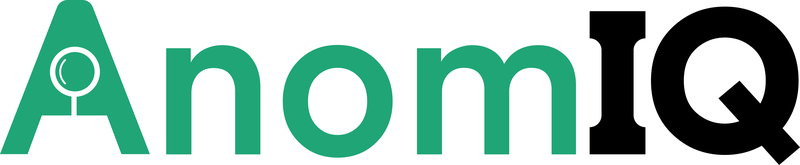

The AI layer inside PivotOS, running every AI workflow across our platforms, grounded, traceable and human-reviewed.
Every AI company in pharma is trying to learn the industry. We started inside it.
One AI layer, built once, shared by every platform we deliver. For the teams that run on it, that means three things.
Screening, extraction, drafting and monitoring run continuously at high volume, freeing qualified people for judgement, not reading.
Every output is grounded in your approved content, cited, confidence-scored and traceable end to end.
Each capability lands on the same validated layer, so adding AI is an addition, not another vendor to qualify.
Enabled across multiple products in the PivotOS ecosystem.
One compliant layer that every Pivot Path product runs its AI and ML on, with the same compliance, governance and data isolation across all of them. Grouped by what it does: grounding answers in your approved content, reading the industry's documents at scale, and acting only under human oversight.
Every platform. One AI layer. One validated foundation.
The right model per task, swapped as the landscape shifts.
Grounded in your SOPs, batch records and history, sources attached.
Semantic search across documents that do not share keywords.
The links between products, sites, suppliers and signals that flat databases lose.
Structured data out of adverse events, letters and narratives, at volume.
BMRs, COAs and validation reports, from filing cabinet to data pipeline.
Multi-step tasks across systems, always with a human reviewer in the chain.
FDA, EMA and CDSCO changes captured as a pipeline, not a reading list.
Outputs versioned, traceable and re-runnable on demand.
Built to align with recognised standards.
21 CFR Part 11 EU Annex 11 GAMP 5 CSV / CSA ALCOA+Validation deliverables (URS support, traceability, IQ/OQ artefacts) come with it, to support and reduce your own validation effort.
AI carries the volume so your specialists spend their time on judgement, not manual review. Authority stays with them, and the audit trail records every decision.
Your content stays yours: prompts, documents, embeddings and outputs stay isolated in your own environment, are never shared across customers, and are never used to train foundation models.
Screening, extraction, drafting and monitoring, running continuously across your data.
Signal validation, deviation closure, batch release: the decisions that matter stay with authorised people.
Every accept, edit or reject is captured in the audit trail, as traceable as the machine's draft.
Nothing critical is released without a human reviewer in the chain.
This is not a plan for the future. The layer is in production today, behind platforms doing regulated work in the field.

Literature and case review in patient safety.
63% faster reviews · 50% lower FTE overhead
Explore NovaVigil →
Anomaly detection across manufacturing and quality data.
60–70% less manual effort · 85% faster detection
Explore AnomIQ →Root-cause and CAPA investigations grounded in your records.
40–60% shorter investigation cycles
Explore InvestigationIQ →Document, training, validation and regulatory intelligence in one platform.
Content authored, reviewed and routed with AI assistance
Explore NoteIQ →Talk to us about where PivotAI fits your workflows, and what it takes to validate it in your environment.